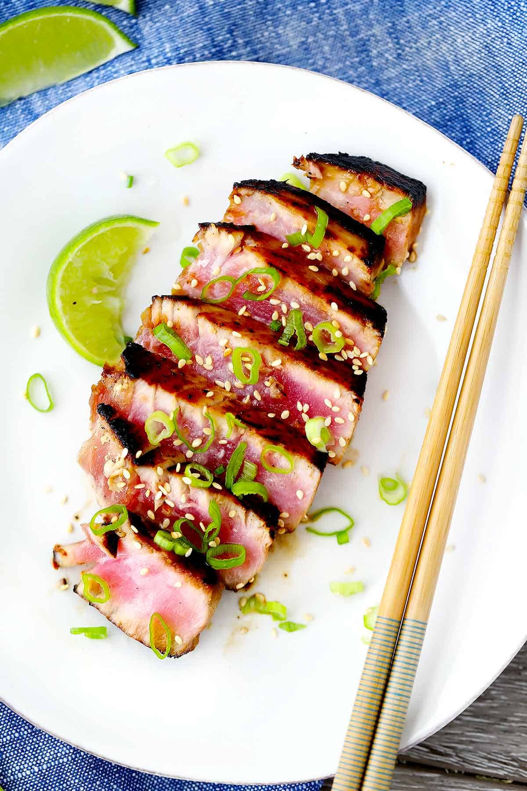

Seared Ahi Tuna
This tuna is incredibly simple and incredibly good to eat!

Description
These Seared Ahi Tuna Steaks (also known as yellowfin or bigeye tuna) take only SIX MINUTES to cook to medium-rare perfection and are bursting with delicious umami flavor from the soy sauce and toasted sesame honey marinade recipe!
Ingredients
- 2 ahi tuna steaks
- 2 tbsp soy sauce
- 1 tbsp toasted sesame oil
- 1 tbsp honey
- 1/2 tsp salt
- 1/4 tsp black pepper
- 1/4 tsp cayenne pepper
- 1 tbsp canola or other light oil
Steps
- Pat the ahi tuna steaks dry with a paper towel. Place on a plate or inside a plastic bag.
- Mix the soy sauce (2 tablespoons), toasted sesame oil (1 tablespoon), honey (1 tablespoon) kosher salt (1/2 teaspoon- OMIT if marinating for more than a couple hours, see notes), pepper (1/4 teaspoon), and cayenne pepper (1/4 teaspoon) until honey is fully dissolved. Pour over the ahi tuna steaks and turn over to coat completely.
- Let marinate for 10 minutes-2 hours.
- Heat a medium skillet (preferably non-stick or a well-seasoned cast iron skillet) on medium-high to high until very hot.
- Add the canola oil (1 tablespoon) to the hot pan. Sear the tuna for 2 minutes on each side for medium rare.
- Remove to a cutting board and allow to rest for at least 3 minutes. Slice into 1/2 inch slices and serve garnished with green onions, toasted sesame seeds, and a squeeze of fresh lime juice, if desired.
Homepage